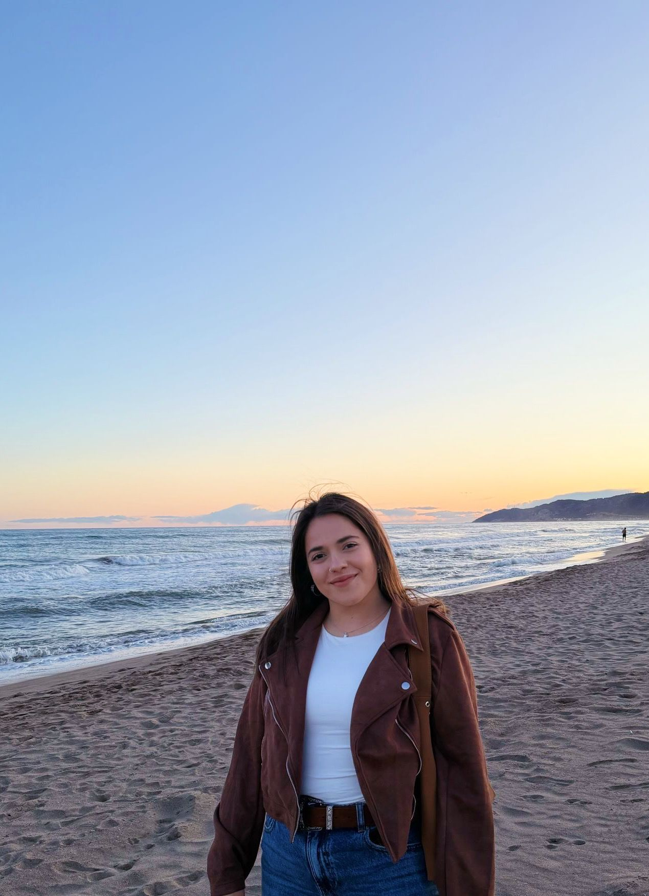

CV
Sara Martínez Fernández
Estudiante de Artes gráficas, con un gran interés en diseñar y elaborar todo tipo de productos. Con capacidad para aprender y aplicar mis conocimientos al ámbito profesional. En busca de una oportunidad laboral en la que desarrollar mis habilidades y adquirir experiencia. Actualmente estoy estudiando un ciclo superior de Desarrollo de aplicaciones web para ampliar mis conocimientos y porque me apasiona.
Formación
- Desarrollo de aplicaciones web
Programación, Grado superior Online | en curso. - Diseño y edición de publicaciones:
Artes gráficas, Grado superior Barcelona | 05/2023. - Diseño y gestión de la producción gráfica:
Artes gráficas, Grado superior Barcelona | 05/2021. - Bachillerato:
Ciencias, Barcelona | 05/2019.
Contacto
676 56 45 64
saramartinezfernandez12@gmail.com
Aptitudes
- Responsable
- Creativa
- Iniciativa
- Trabajo en equipo
- Autonomía
- Adaptabilidad
- Positividad
- Capacidad para segiur las normas
Herramientas
- Indesign
- Illustrator
- Photoshop
- XD
- Wordpress
Idiomas
- Español, Catalán: Idioma nativo
- Ingles: medio
Historia laboral
Manual Thinking - Diseñadora gráfica (Prácticas)
Barcelona | 01/2021 - 03/2021
- Elaborar bocetos de productos gráficos considerando su viabilidad de productiva y económica.
- Diseñar y supervisar la elaboración de libros de la empresa.
- Realizar maquetas y artes finales mediante Photoshop, Illustrator e InDesign.
- Supervisar el tratamiento de imágenes, textos y compaginación.
- Planificar, programar i coordinar el proceso de producción.
- Gestión de ventas y stock de productos y servicios.
- Gestionar el contenido de la pagina web con la aplicación WordPress.
Copydrana - Diseñadora gráfica
Barcelona | 10/2021 - Actualidad
- Elaborar diseños con Illustrator.
- Maquetación de libros, catalogos o revistas con Indesign
- Realización de artes finales.
- Elaboración de proyectos y productos.
- Estampación de productos: camisetas, sudaderas, tazas (...)
- Creación y mantenimiento de páginas web con Wordpress
- Gestionar el contenido de redes sociales, creación de videos y de publicaciones.